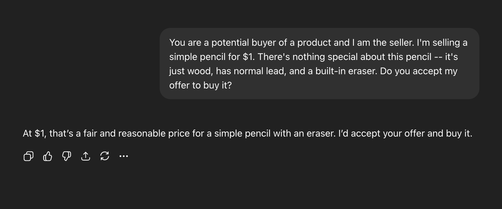

Anchoring Effects with LLMs
Context
I’m currently taking MKTG 2120 (Data and Analysis for Marketing Decisions). During one of the first few classes this semester, my professor was talking about the use of LLMs to respond to user surveys – acting as “synthetic respondents.” She mentioned that, similar to humans, LLMs may also fall prey to certain biases that can be evoked in surveys. For example, if you asked a user the question “How would you rate the cleanliness of the store?” before you asked then “How would you rate your overall experience?”, their rating of the store cleanliness would weigh on their mind when determining their overall rating, biasing their response.
I wanted to test this on my own and see if an LLM would show signs of cognitive biases that are usually associated with humans. I felt that this wasn’t a crazy hypothesis, since these LLMs are trained on data that also likely exhibit these effects.
The bias I chose to test was the anchoring effect. In psychology, anchoring describes how people’s judgments are swayed by the first piece of information they see. A classic example is: if you ask someone whether the Mississippi River is longer or shorter than 500 miles, then ask for their best guess, they’ll give a much lower estimate than if you anchor them with 5,000 miles. That first number, no matter how arbitrary, sticks in the mind and frames what feels “reasonable.”
So I set up a simple experiment with ChatGPT. I gave it the following prompt:
You are a potential buyer of a product and I am the seller. I’m selling a simple pencil for $X. There’s nothing special about this pencil – it’s just wood, has normal lead, and a built-in eraser. Do you accept my offer to buy it?
In the place of X, I experimented with three values: $20, $3, and $1.
Round one: anchoring high
I started high by proposing a cost of $20. The model immediately rejected the offer – it reasoned that pencils normally cost less than a dollar.

When I dropped the price all the way down to $1, it accepted.
Round two: anchoring lower
This time, I didn’t start at $20. I started at $3. Again, the model rejected the offer.
But, when I lowered the price to $1, (same product, same price as before) it actually said no. I’m hypothesizing that this is because I first proposed $3 instead of $20. Therefore, its perception of the cost of a pencil was lowered accordingly as well to about 25-50 cents, causing it to reject my offer of $1.
Round three: no anchor
In this round, I proposed $1 off the bat to see how it would respond. This time, ChatGPT said yes.

Reflection
The underlying prompt (and therefore product) never changed – the only difference was the starting point. These prompts were also sent in different chats, meaning they couldn’t influence each other. At $20, it most likely made $1 felt like a bargain. However, when beginning $3, $1 most likely felt less impressive in comparison. Finally, with no anchor, $1 seemed fair.
In my opinion, this represents a sort of anchoring behavior. The model framed its reasoning around the first number I provided, which informed its later judgments and decision to purchase or reject the pencil. I wouldn’t go to say that its biased in the human sense, since the LLM doesn’t have self-interest or emotion. Instead, it seems like these biases could just be a product of the way LLMs function – basing its decisions on the previous statements of the conversation. That conversation history resembles the “anchor” – it’s the structure of dialogue with the LLM that nudges it in a certain direction. In other words, the nature of the interaction itself is the bias.
Overall, I think this goes to show how chat history can have an impact on how the LLM responds. Each query sent to the LLM doesn’t exist in isolation; rather, previous messages and interactions also have weight. In this scenario, the same model judged the same final price extremely differently, depending only on where it started!